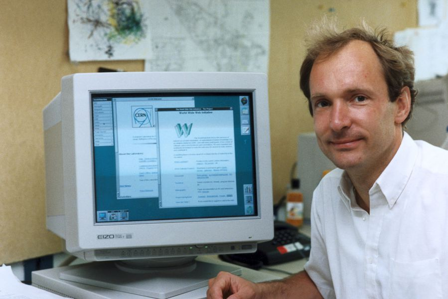

Человек, который изобрёл сайты, серверы и ссылки — Тим Бернерс-Ли

Тимоти Джон Бернерс-Ли - чистокровный потомственный англичанин (фамилия “Ли” имеет происхождение из старого
английского языка), а ещё сын учёных. Его родители - Конуэй Бернерс-Ли и Мэри Ли Вудс - были математиками.
Причём, и любовь к компьютерным технологиям у Тима тоже наследственная - оба родителя работали над одним из
первых в мире компьютеров “Марк I”. Тем не менее, до того, как повлиять на мир, Тим Бернерс-Ли успел сменить
множество мест работы и занятий.
Построил компьютер
В детстве Тим учился в школе в Уондсворте, а затем - в Королевском колледже при Оскфордском
университете. Там с ним произошла интересная история - вместе с другом они “нецелесообразно использовали
компьютеры университета” (одни утверждают, что друзья устроили хакерскую атаку, другие - что они просто
игрались в игрушки).
В результате обоим запретили использовать компьютеры в университете, что вдохновило
Бернерса-Ли на создание собственного компьютера. В качестве процессора он взял Motorola 6800, вместо
монитора - телевизор, а клавиатуру Тим позаимствовал у сломанного калькулятора. В общем, хотя интерес Тима к
компьютерам был высок, Оскфордский университет в 1976 году он в итоге закончил по специальности “Физика”.
Видимо, в 70-х годах прошлого века это было ближе всего к компьютерам.
Сразу после университета Тим Бернерс-Ли переехал в графство Дорсет, где стал работать в компании «Plessey
Telecommunications Ltd», занимаясь распределёнными транзакциями. Об этом периоде его жизни известно
очень мало - жизнь он вёл самую обычную и “на глаза не попадался”.
Надолго на первой работе он, впрочем, тоже не задержался, и уже через два года ушёл в «D.G Nash Ltd»,
где писал утилиты для принтеров и даже создал нечто вроде операционной системы с многозадачностью.
Первое появление в Женеве
Но через год случилось судьбоносное событие - Бернерс-Ли попал в лабораторию по ядерным исследованиям CERN
(находится в Женеве, Швейцария), где сначала проработал лишь полгода. Там он был консультантом по
программному обеспечению, а кроме того создал систему работы с документами Enquire, которая использовала
случайные ассоциации. Позже это пригодилось и для разработки Всемирной паутины, но в 1982 году Тим на время
покинул CERN и работал в другой компании.
Возвращение в CERN произошло в 1984 году - Бернерса-Ли пригласили для работы над системой “FASTBUS”.
Параллельно с этим он разработал RPC - собственную систему удалённого вызова процедур, которая, грубо
говоря, позволяла обращаться к функциям или процедурам на другом компьютере, а также доработал Enquire -
именно она в итоге и превратилась во “Всемирную паутину”.
Вообще, Бернерс-Ли не то, чтобы собирался менять мир. Он просто работал на благо своего работодателя,
попутно реализуя какие-то собственные проекты, которые, опять же, были созданы с целью упростить и
автоматизировать работу. Примерно так же возникла WWW. И об этом стоит рассказать подробнее.
Создание Всемирной паутины
Понятия “Всемирная паутина” (World Wide Web, www) и “Интернет” часто путают, хотя это далеко не одно и то же.
Интернет - именно как сеть - действительно был создан американскими военными и задолго до WWW. Но Всемирная
паутина - это проект, возникший в Европе, в стенах женевской лаборатории по ядерным исследованиям CERN, и
именно его автором был Бернерс-Ли. Хотя, безусловно, именно создание WWW спровоцировало бешеный темп
развития Интернета.
Так что же такое Всемирная паутина?
- Этим словосочетанием Бернерс-Ли назвал схему перекрёстных ссылок в
гипертекстовых документах.
- Если ещё проще сказать - это веб-страницы со ссылками. То есть, каждая
веб-страница, это такой созданный с помощью специального языка HTML (Hyper Text Markup Language - язык
гипертекстовой разметки) документ.
- Этот документ имеет свою уникальную ссылку URI/URL (Uniform Resource
Identifier - унифицированный идентификатор ресурса).
- Получить доступ к нему можно с помощью специальной
программы - браузера - по протоколу HTTP (Hyper Text Transfer Protocol - протокол передачи
гипертекстовых
документов).
При чём тут Стив Джобс
Впрочем, ещё более интересно, что работал над WWW Бернерс-Ли именно на компьютерах фирмы NeXT - наверняка
некоторым читателям это название показалось знакомым. NeXT - компания по производству компьютеров на базе
собственной операционной системы, которую основал Стив Джобс после того, как его выгнали из Apple. Немалую
роль в создании гипертекста сыграло и само программное обеспечение компьютеров NeXT - в частности, там был
WYSIWYG редактор (What You See Is What You Get - ты видишь то, что получаешь). Забавно, что с развитием WWW
про концепцию WYSIWYG на время забудут. По сути, именно удобство и функциональность операционной системы
NeXTStep вдохновили Тима.
Но через год случилось судьбоносное событие - Бернерс-Ли попал в лабораторию по ядерным исследованиям CERN
(находится в Женеве, Швейцария), где сначала проработал лишь полгода. Там он был консультантом по
программному обеспечению, а кроме того создал систему работы с документами Enquire, которая использовала
случайные ассоциации. Позже это пригодилось и для разработки Всемирной паутины, но в 1982 году Тим на время
покинул CERN и работал в другой компании.
Идеология и последствия
С развитием WWW Тим Бернерс-Ли видел своё детище именно как свободную систему для всех. Кстати, W3C даже не
берёт денег за использование своих разработок и не патентует никакие стандарты.
Основные принципы WWW по мнению её создателя такие:
- Возможность редактировать информацию не менее важна, чем возможность просто исследовать WWW
- Компьютеры могут быть использованы для «фоновых процессов», чтобы помочь людям работать сообща
- Каждый аспект Сети должен работать как паутина, а не как иерархия.
- Учёные-компьютерщики несут не только техническую ответственность, но и моральную.
Тем не менее, в реальном мире получилось не всё так идеально. Да, веб-сервер может “поднять” любой человек -
и это хорошо, но адрес веб-сервера - это IP-адрес, то есть, набор из четырёх трёхзначных чисел, разделённых
точкой.
Запоминать такое неудобно. Согласитесь, "ferra.ru" запомнить проще, а набирать в адресной строке браузера
удобнее, чем какое-нибудь 192.65.234.43. Тем более, если веб-сайт вдруг переедет на другой веб-сервер -
физический адрес сменится и все ресурсы станут недоступны по размещённым ранее ссылкам.
Тимоти Джон Бернерс-Ли - чистокровный потомственный англичанин (фамилия “Ли” имеет происхождение из
старого
английского языка), а ещё сын учёных. Его родители - Конуэй Бернерс-Ли и Мэри Ли Вудс - были
математиками.
Причём, и любовь к компьютерным технологиям у Тима тоже наследственная - оба родителя работали над одним
из
первых в мире компьютеров “Марк I”. Тем не менее, до того, как повлиять на мир, Тим Бернерс-Ли успел
сменить
множество мест работы и занятий.
Поэтому вместо IP-адреса используются доменные имена - простые символьные комбинации. А на специальных
серверах хранятся данные о соответствии доменного имени IP-адресу. Эта система называется DNS (Domain
Name System - система доменных имён), а сервера - DNS-серверами.
На сегодняшний день большинство DNS-серверов находятся на территории США, что нарушает идею о
децентрализации и сам Тим Бернерс-Ли не очень-то этим доволен. Более того - поскольку WWW всё больше
обрастает технологиями и уже совсем не похожа на те простые странички со ссылками, что были изначально,
то поставщики этих технологий оказываются в более привилегированном положении, чем простые пользователи.